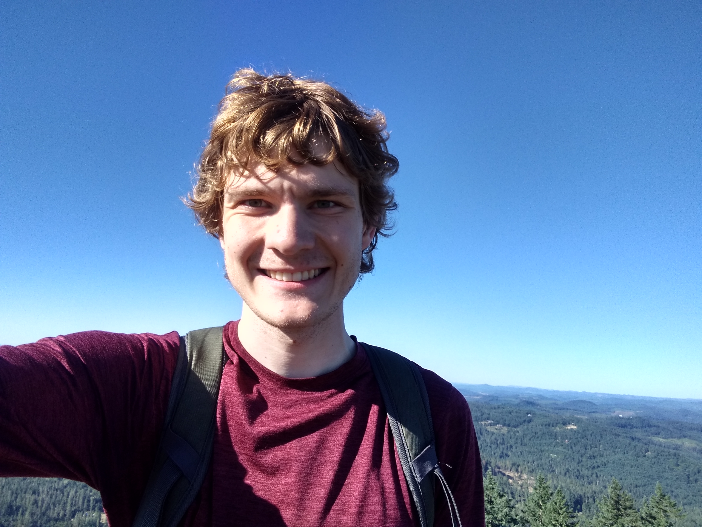
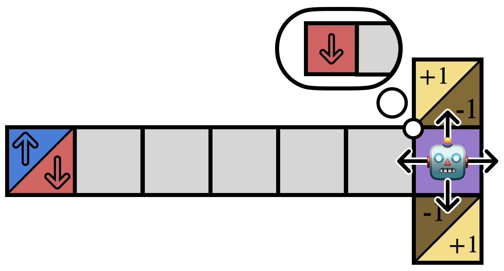
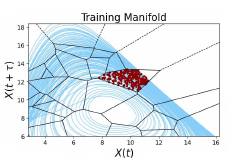
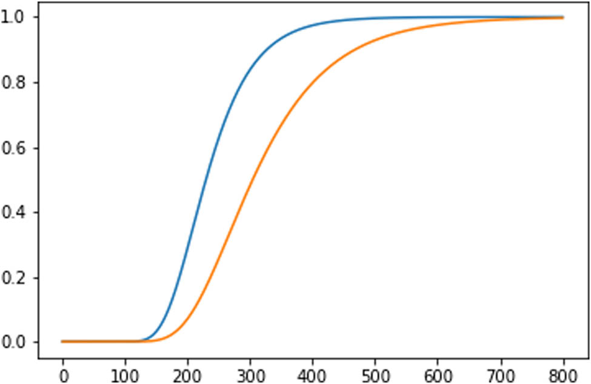
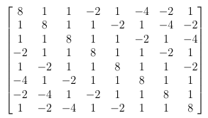
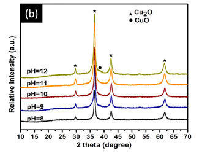

|
Aaron Kirtland
I'm a PhD student in applied math at Brown University interested in sequential decision making and cognitively-inspired AI.
I am supported by an NSF-GRFP award.
I attended Washington University in St. Louis because of a full-tuition scholarship, and I thru-hiked the Pacific Crest Trail after graduating in 2021.
Send me an email or leave me a message if you would like to chat!
Email /
Google Scholar /
Blog
Github /
iNaturalist /
OSM
|

|
|

|
Mitigating Partial Observability in Sequential Decision Processes via the Lambda Discrepancy
Cameron Allen*, Aaron Kirtland*, Ruo Yu Tao*, Sam Lobel, Daniel Scott, Nicholas Petrocelli, Omer Gottesman, Ronald Parr, Michael L. Littman, George Konidaris
NeurIPS, RLC Finding the Frame workshop, and ICML FoRLaC workshop, 2024
|
|

|
An Unstructured Mesh Approach to Nonlinear Noise Reduction for Coupled Systems
Aaron Kirtland, Jonah Botvinick-Greenhouse, Marianne DeBrito, Megan Osborne, Casey Johnson, Robert S. Martin, Samuel J. Araki, Daniel Q. Eckhardt
SIAM Journal on Applied Dynamical Systems, 2023
|
|

|
The polynomial learning with errors problem and the smearing condition
Liljana Babinkostova*, Ariana Chin*, Aaron Kirtland*, Vladyslav Nazarchuk*, Esther Plotnick*
Journal of Mathematical Cryptology, 2022
|
|

|
The Ring Learning with Errors Problem: Spectral Distortion
Liljana Babinkostova*, Ariana Chin*, Aaron Kirtland*, Vladyslav Nazarchuk*, Esther Plotnick*
Accepted with minor revisions to Involve, A Journal of Mathematics, 2022
|
|

|
Preparing cuprous oxide nanomaterials by electrochemical method for non-enzymatic glucose biosensor
Thu-Thuy Nguyen, Bui The Huy, Seo-Young Hwang, Nguyen Minh Vuong, Quoc-Thai Pham, Nguyen Ngoc Nghia, Aaron Kirtland, and Yong-Ill Lee
Nanotechnology, 2018
|
|
{kind=link}